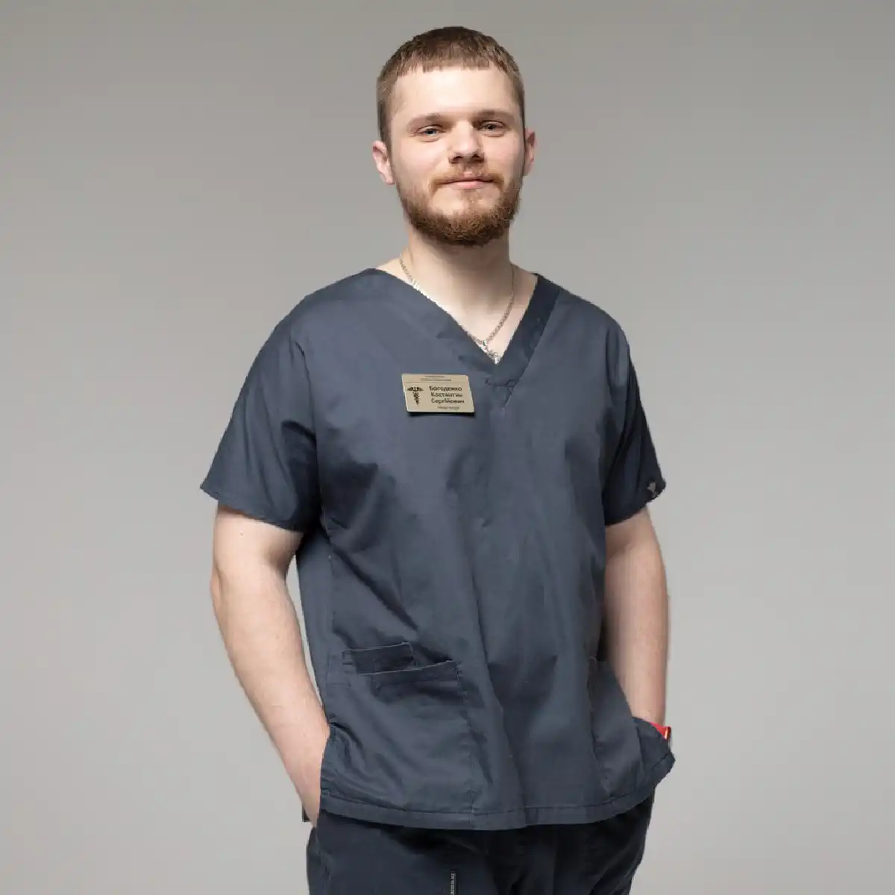

+38(068) 79 72 782
+38(068) 79 72 782Нарколог Київ
Лікуємо залежність професійно та анонімно


Безкоштовна консультація, працюємо цілодобово 24/7
Лікуємо залежність професійно та анонімно
Нарколог у Києві — це лікар, який надає професійну допомогу при алкогольній та наркотичній залежності, проводить діагностику, детоксикацію, кодування та супроводжує пацієнта на всіх етапах лікування. Своєчасна консультація нарколога дозволяє запобігти ускладненням, стабілізувати стан і розпочати ефективну терапію. Звернення до лікаря особливо важливе при появі перших ознак залежності: втраті контролю над кількістю вживаного, частих запоях, вираженому похмільному синдромі, ломці, тривожності, порушеннях сну або різких перепадах настрою. Нарколог не лише оцінює поточний стан пацієнта, але й виявляє можливі ризики для серця, печінки, нервової системи та психічного здоров’я. Це дозволяє підібрати безпечну тактику лікування і мінімізувати ймовірність тяжких наслідків.
Залежність — це медичне захворювання, що потребує комплексного підходу. Вона зачіпає не лише фізичний стан, а й психологічну сферу, соціальні зв’язки, професійну діяльність та стосунки в сім’ї. Чим довше відкладається звернення по допомогу, тим вищий ризик ускладнень: гіпертонічних кризів, порушень серцевого ритму, токсичного ураження печінки, депресивних розладів і соціальної дезадаптації. Чим раніше людина звертається по допомогу, тим вищі шанси на безпечне відновлення і повернення до повноцінного життя. На ранніх етапах лікування проходить легше, потребує менше часу і дозволяє швидше стабілізувати стан. Своєчасна консультація нарколога в Києві допомагає не лише зняти гострі симптоми, але й розробити індивідуальний план терапії, спрямований на стійку ремісію та профілактику рецидивів.
Сучасна наркологія поєднує медикаментозну підтримку, психотерапію, реабілітаційні програми та тривале спостереження. Такий підхід допомагає не просто зупинити вживання, а змінити спосіб життя, відновити фізичне і психоемоційне здоров’я та зміцнити мотивацію до тверезості. Саме комплексна допомога лікаря створює основу для довгострокового результату і стійкого повернення до активного, здорового життя.
Консультація нарколога в Києві необхідна при регулярному вживанні алкоголю або наркотичних речовин, появі запоїв, вираженої тяги, абстинентного синдрому, погіршенні самопочуття або помітних змінах поведінки. Навіть якщо вживання здається «контрольованим», але стає дедалі частішим або починає впливати на самопочуття і спосіб життя, це вже серйозна підстава звернутися до лікаря.
Звернення до нарколога на ранньому етапі дозволяє своєчасно оцінити фізичний і психоемоційний стан пацієнта, виявити приховані ризики для серцево-судинної системи, печінки, нервової системи та психіки. Лікар визначає стадію залежності (якщо вона вже сформована), оцінює вираженість абстиненції і підбирає безпечну тактику лікування — від профілактичних рекомендацій до медикаментозної підтримки або детоксикації. Підставою для запису до нарколога також є:
Залежність рідко розвивається раптово — найчастіше це поступовий процес. Спочатку формується психологічна тяга, потім з’являються фізичні симптоми відміни, а з часом страждає загальний стан здоров’я та соціальна сфера життя. На цьому етапі відкладання консультації може призвести до тяжких ускладнень. Навіть якщо людина сумнівається у наявності залежності, консультація лікаря допомагає об’єктивно оцінити ситуацію і визначити ступінь ризику. Нарколог проводить детальне опитування, за потреби рекомендує додаткові обстеження і пояснює можливі сценарії розвитку проблеми. Іноді достатньо профілактичних рекомендацій і психологічної підтримки, щоб зупинити процес на ранній стадії.
Рання діагностика суттєво знижує ймовірність тяжких ускладнень — гіпертонічних кризів, порушень серцевого ритму, токсичного ураження печінки, депресивних і тривожних розладів, а також соціальних наслідків. Чим раніше розпочато лікування, тим легше проходить відновлення і тим вищі шанси на стійку ремісію. Своєчасне звернення до нарколога в Києві — це крок до збереження здоров’я, відновлення контролю над ситуацією і запобігання подальшому прогресуванню залежності. Це можливість не лише стабілізувати стан, а й повернути людині впевненість, працездатність і якість життя.
До лікаря-нарколога звертаються при різних формах залежності та станах, пов’язаних із вживанням психоактивних речовин. Підставою для консультації можуть бути як гострі стани, що потребують термінової допомоги, так і планове лікування або профілактика рецидивів. До нарколога звертаються при:
Лікар-нарколог проводить детальний огляд, збирає анамнез, оцінює загальний фізичний і психічний стан пацієнта, визначає ступінь залежності та можливі ризики ускладнень. За потреби вимірюються життєво важливі показники, аналізується наявність супутніх захворювань, уточнюється стаж і характер вживання. На підставі отриманих даних лікар підбирає безпечну та індивідуальну стратегію лікування. Це може включати детоксикацію, медикаментозну підтримку, кодування, психотерапію, реабілітацію або профілактичне спостереження. Комплексний і персоналізований підхід дозволяє не лише усунути гострі симптоми, а й знизити ризик повторного вживання, стабілізувати стан пацієнта та створити умови для довгострокового відновлення.
Консультація нарколога в Києві може проходити повністю конфіденційно. Анонімність особливо важлива для людей, які побоюються розголосу проблеми на роботі, в сім’ї або в соціальному середовищі. Багато хто відкладає звернення до лікаря саме через страх, що інформація стане відома третім особам. Однак професійна наркологічна допомога може бути організована максимально делікатно і без зайвої уваги. Медична допомога надається без постановки на облік, якщо формат звернення це дозволяє, а персональні дані пацієнта захищені відповідно до чинних медичних стандартів і норм конфіденційності. Уся інформація про стан здоров’я, діагноз і лікування є лікарською таємницею і не передається третім особам без згоди пацієнта.
Анонімна консультація може включати первинний огляд, оцінку стану, рекомендації щодо лікування, підбір медикаментозної терапії або план детоксикації. За потреби можливо організувати виїзд лікаря додому, що додатково підвищує рівень приватності та знижує стрес для пацієнта. Конфіденційність створює безпечну атмосферу, у якій людині простіше відкрито розповісти про проблему і отримати кваліфіковану допомогу. Це дозволяє розпочати лікування своєчасно і без побоювань за особисту репутацію або професійну діяльність.
В екстрених ситуаціях потрібна термінова допомога нарколога в Києві. Підставою для негайного звернення можуть бути сильна алкогольна або наркотична інтоксикація, виражений абстинентний синдром (ломка), різке погіршення самопочуття, гіпертонічний криз після вживання алкоголю, судоми, втрата свідомості, сильне блювання, зневоднення або виражені порушення серцевого ритму.
Особливо небезпечні стани, що супроводжуються стрибками тиску, болем у грудях, порушенням дихання, сплутаністю свідомості або агресивною поведінкою. Такі симптоми можуть свідчити про серйозну загрозу для здоров’я і потребують професійного медичного втручання. Спроби «перетерпіти» або впоратися самостійно можуть призвести до тяжких ускладнень.
Цілодобовий виїзд лікаря додому дозволяє оперативно оцінити стан пацієнта, провести необхідну діагностику і розпочати лікування без зволікань. Нарколог контролює життєво важливі показники — тиск, пульс, рівень свідомості — і за потреби проводить інфузійну терапію для зняття інтоксикації та стабілізації роботи організму. Своєчасна термінова допомога допомагає запобігти розвитку ускладнень з боку серця, нервової системи та внутрішніх органів, полегшити стан пацієнта і створити умови для подальшого лікування залежності. Швидка реакція в критичній ситуації нерідко стає ключовим фактором збереження здоров’я і життя.
Вартість консультації нарколога в Києві починається від 1500 грн.
На первинному прийомі лікар-нарколог проводить комплексну оцінку стану пацієнта, щоб визначити ступінь проблеми та підібрати безпечну тактику лікування. Консультація проходить у спокійній обстановці і включає детальний розбір ситуації без осуду та тиску. Під час прийому лікар:
Лікар також звертає увагу на супутні захворювання, перенесені кризи, наявність хронічних патологій і можливі протипоказання до певних методів терапії. Це особливо важливо перед детоксикацією або кодуванням. За потреби можуть бути призначені лабораторні аналізи, додаткові обстеження або рекомендована медична детоксикація для безпечного зняття інтоксикації. Головна мета первинної консультації — об’єктивно оцінити стан пацієнта, знизити ризики ускладнень і запропонувати максимально ефективну та безпечну програму лікування з урахуванням індивідуальних особливостей.
Лікування алкоголізму включає комплекс медичних і психотерапевтичних заходів, спрямованих не лише на зняття гострих симптомів, а й на формування стійкої ремісії. Алкогольна залежність зачіпає фізичний стан, психіку та соціальну сферу життя, тому ефективна терапія потребує системного і поетапного підходу. Важливо розуміти, що разове втручання не вирішує проблему повністю. Лише послідовне лікування з медичним контролем і психологічною підтримкою дозволяє досягти стабільного результату та мінімізувати ризик повернення до вживання. До програми лікування можуть входити:
Комплексний підхід допомагає стабілізувати фізичний і психоемоційний стан пацієнта, відновити внутрішні ресурси організму та значно знизити ризик повторних зривів. Він спрямований не лише на припинення вживання, а й на відновлення якості життя, працездатності, соціальних зв’язків і особистої впевненості. Чим послідовніше проводиться лікування і чим активніше пацієнт бере участь у процесі відновлення, тим вища ймовірність тривалої та стійкої тверезості. Саме системна робота з лікарем створює основу для безпечного виходу із залежності та повернення до повноцінного життя.
Нарколог у Києві надає допомогу при залежності від опіоїдів, стимуляторів, синтетичних речовин, прегабаліну та інших психоактивних препаратів. Кожна речовина по-різному впливає на організм і психіку, тому підхід до лікування завжди підбирається індивідуально з урахуванням типу вживаної речовини, стажу залежності, загального стану здоров’я та наявності супутніх захворювань.
Залежність від опіоїдів часто супроводжується вираженим абстинентним синдромом, сильними болями, тривожністю та порушеннями сну. Стимулятори і синтетичні речовини можуть викликати серйозні психоемоційні порушення, виснаження нервової системи, проблеми з серцем і різкі перепади настрою. При зловживанні прегабаліном формується як фізична, так і психологічна залежність, що потребує поступової відміни під контролем лікаря.
Лікування може включати медичну детоксикацію для безпечного виведення токсичних речовин і зняття симптомів ломки, медикаментозну терапію для стабілізації нервової та серцево-судинної систем, а також відновлення сну і загального самопочуття. Важливою частиною терапії є психотерапія — робота з причинами залежності, формування стійкої мотивації до тверезості та навчання навичкам самоконтролю.
Після стабілізації стану рекомендується реабілітація та підтримувальне спостереження. Цей етап допомагає закріпити результат лікування, знизити ризик повторного вживання і поступово повернути людину до повноцінного соціального життя. Своєчасне звернення до нарколога в Києві суттєво знижує ризик ускладнень, тяжких психічних порушень і передозування. Чим раніше розпочата професійна допомога, тим вищі шанси на безпечне відновлення та стійку ремісію.
Кодування від алкоголізму проводиться після обов’язкової консультації лікаря та ретельної оцінки стану пацієнта. Перед процедурою спеціаліст уточнює стаж уживання алкоголю, загальний стан здоров’я, наявність хронічних захворювань, психоемоційні особливості та можливі протипоказання. Такий попередній етап необхідний для вибору безпечного й ефективного методу кодування від алкоголізму.
Метод кодування від алкоголізму може включати медикаментозний вплив — ін’єкцію, підшивку або прийом таблетованих препаратів. Принцип дії ґрунтується на формуванні стійкого фізіологічного або психологічного бар’єра проти вживання спиртного. У разі вживання алкоголю в пацієнта виникають виражені неприємні реакції або стійка відраза до спиртного, що знижує ризик зриву.
Перед процедурою кодування від алкоголізму обов’язково виключаються протипоказання, такі як тяжкі захворювання серця, печінки, виражені психічні розлади або гострі запальні процеси. Лікар детально пояснює механізм дії методу, можливі реакції організму та правила поведінки після кодування. Усвідомлена згода пацієнта є обов’язковою умовою проведення процедури. Кодування від алкоголізму допомагає створити безпечний період тверезості, протягом якого людина може відновити фізичне здоров’я, стабілізувати емоційний стан і зміцнити мотивацію до лікування. Однак найкращий результат досягається при поєднанні кодування від алкоголізму з психотерапією та підтримувальним спостереженням лікаря. Комплексний підхід дозволяє не лише тимчасово зупинити вживання, а й значно знизити ризик рецидиву в довгостроковій перспективі.
Кожен випадок залежності унікальний і потребує уважного аналізу. У різних пацієнтів відрізняється стаж уживання, тип речовини, стан внутрішніх органів, рівень мотивації до лікування та психологічні особливості. Тому нарколог розробляє індивідуальний план лікування з урахуванням загального стану здоров’я, ступеня залежності, наявності хронічних захворювань і психоемоційного фону пацієнта.
Індивідуальна програма може включати детоксикацію, медикаментозну підтримку, кодування від алкоголізму (за потреби), психотерапію та етап реабілітації. Лікар враховує переносимість препаратів, ризики ускладнень і соціальну ситуацію пацієнта — наявність підтримки з боку родини, робоче навантаження, рівень стресу.
Такий персоналізований підхід дозволяє підібрати оптимальну тактику терапії, мінімізувати можливі побічні реакції та створити комфортні умови для відновлення. Індивідуальний план лікування значно підвищує ефективність терапії, зміцнює мотивацію до тверезості та знижує ймовірність рецидиву в майбутньому. Чим точніше підібрана стратегія лікування, тим стійкішим і тривалішим буде результат.
Після зняття гострого стану — будь то детоксикація, виведення із запою або стабілізація після абстинентного синдрому — важливо не припиняти лікування. Багато пацієнтів відчувають покращення самопочуття і помилково вважають, що проблему вирішено. Однак саме в цей період зберігається високий ризик повернення до вживання, оскільки психологічна тяга та поведінкові звички можуть залишатися.
Підтримувальна терапія допомагає закріпити досягнутий результат. Вона може включати медикаментозну корекцію, спрямовану на стабілізацію нервової системи, нормалізацію сну, зниження тривожності та підтримання емоційної рівноваги. Регулярні консультації лікаря дозволяють контролювати стан пацієнта, своєчасно коригувати лікування та попереджати можливі ускладнення.
Психотерапія відіграє особливо важливу роль на етапі ремісії. Робота з психологом або психотерапевтом допомагає виявити тригери, що провокують бажання вжити, навчитися справлятися зі стресом без алкоголю чи наркотиків і вибудувати нові, здорові моделі поведінки. За потреби підключається сімейна терапія, що посилює підтримку з боку близьких і знижує напруження в родині. Профілактика зривів — ключовий етап довгострокового одужання. Послідовне спостереження, підтримка лікаря та участь пацієнта в процесі лікування значно підвищують ймовірність стійкої ремісії та допомагають зберегти тверезість на тривалий термін.
У Києві можна отримати довідку психіатра-нарколога під час проходження медичних комісій, оформлення документів, отримання водійського посвідчення, працевлаштування або продовження дозволів. Такий документ підтверджує відсутність протипоказань, пов’язаних із вживанням психоактивних речовин, і потрібен у низці офіційних процедур. Довідка може знадобитися при працевлаштуванні на посади з підвищеною відповідальністю, роботі з транспортом, зброєю, в охоронній діяльності, а також при вступі на державну службу. Крім того, її запитують під час проходження планових медичних оглядів і оформлення деяких дозвільних документів.
Перед видачею довідки проводиться огляд лікаря-психіатра-нарколога. Під час консультації спеціаліст уточнює стан здоров’я, наявність або відсутність ознак залежності, за потреби ставить уточнювальні запитання та оцінює загальний психоемоційний стан. В окремих випадках можуть бути рекомендовані додаткові обстеження або лабораторні аналізи відповідно до встановлених вимог.
Документ оформлюється відповідно до чинного законодавства після огляду лікаря. Довідка має встановлену форму та строк дії, а процедура її отримання проходить із дотриманням конфіденційності медичної інформації. Звернення до спеціалізованого наркологічного центру дозволяє пройти огляд швидко, коректно та без зайвих затримок, отримавши офіційний документ у встановленому порядку.
Наркологічний центр UmbrellaPlus у Києві надає комплексну медичну допомогу при алкогольній і наркотичній залежності. Центр працює з пацієнтами на різних стадіях захворювання — від первинної консультації та профілактики до детоксикації, кодування від алкоголізму, медикаментозної терапії та тривалого супроводу в період ремісії.
Основне завдання лікарів — не лише зняти гострий стан, а й допомогти людині безпечно вийти із залежності, відновити здоров’я та повернути контроль над своїм життям. Лікування будується на принципах доказової медицини, індивідуального підходу та повної конфіденційності. Своєчасне звернення до лікарів UmbrellaPlus дозволяє безпечно пройти детоксикацію, стабілізувати фізичний і психоемоційний стан, знизити ризики ускладнень і розпочати шлях до стійкої тверезості. Чим раніше розпочато лікування, тим вища ймовірність довгострокового та стабільного результату.
Телефон для консультації та виклику нарколога в Києві: +38(050-021-69-57)
Так, ми суворо дотримуємося повної конфіденційності на всіх етапах лікування. Інформація про пацієнта, діагноз та проходження терапії не передається третім особам. Звернення до нас не тягне за собою постановку на облік. Ви можете бути впевнені у безпеці та анонімності.
Програма лікування розробляється індивідуально після консультації з фахівцем. Враховуються вид залежності, її тривалість, фізичний та психологічний стан пацієнта. Такий підхід дозволяє підвищити ефективність терапії та знизити ризик зриву. Ми не використовуємо шаблонні рішення.
Так, ми супроводжуємо пацієнтів і після основного курсу лікування. Проводяться консультації, рекомендації щодо адаптації та профілактики рецидивів. За потреби можлива подальша психологічна підтримка. Це допомагає зберегти результат та повернутися до повноцінного життя.
Анонимно

Ну в хлопців просто золоті руки й світла голова, мене капали Олексій та Владислав, буквально за декілька сеансів я наче заново народився, до цього пив більше 3х тижнів, не міг зупинитись, дуже радий що знайшов саме цих спеціалістів, всім рекомендую
Анонимно
В течение нескольких лет я злоупотреблял алкоголь, что привело к увольнению с работы и вызвало у меня мысли о суициде. Понимая, что такой образ жизни неприемлем, я обратился за помощью в клинику “Амбрела”. Здесь я смог преодолеть свою зависимость от спиртного благодаря заботливым и опытным врачам, а также эффективной системе лечения. Спустя более года я полностью избавился от желания употреблять алкоголь, и теперь моя жизнь вернулась в норму. Я даже не приближаюсь к спиртному! Благодарю врачей клиники “Амбрела” за их помощь и заботу.
Анонимно
Я обращался за помощью в различные клиники, пытаясь избавиться от своей зависимости от алкоголя, но без особых успехов. Никак не мог справиться с желанием прибегнуть к бутылке, пока друг не посоветовал мне обратиться в центр “Амбрелла”. Я записался на прием и был поражен заботливым отношением к пациентам. Уже прошло два года, и теперь я смотрю на алкоголь с абсолютной равнодушием, активно занимаюсь спортом и улучшил отношения в семье. Благодаря центру “Амбрелла” моя жизнь была спасена от алкогольной зависимости!
Анонимно
Хочу выразить свою благодарность врачам из центра алкоголизма “Амбрела” за то, что они буквально спасли мою жизнь. В течение последнего года я сильно увлекался питьем, и все это привело к катастрофическим последствиям. Хотя я ходил на терапевтические сеансы, но безрезультатно. Тогда я нашел адрес клиники “Амбрела” в интернете, изучил отзывы и информацию о центре, и записался на прием. Там мне сразу предложили методику лечения, которая помогла не только справиться с физической ломкой, но и психической зависимостью от алкоголя. Не буду распространяться, скажу только одно - после пребывания в этой клинике я стал другим человеком, и навсегда забыл, что такое привкус алкоголя. Больше меня не тянет на это! Я искренне верю, что в центре “Амбрела” трудятся настоящие целители душ!
Анонимно
После сложного развода мой сын начал подавлять свою обиду и горе употреблением алкоголя. Он старался скрывать это от меня, но я, как мать, почувствовала, что что-то не так. В конечном итоге, ситуация стала критической. Моя знакомая посоветовала мне обратиться в клинику “Амбрела”. Я была приятно удивлена их работой! Они помогли сыну преодолеть очередной период злоупотребления алкоголем, и с тех пор прошел уже более года, и он совсем не пьет.
Анонимно
Благодаря вашей помощи, моя семья была спасена. Я с трудом уговорила мужа начать лечение, и последний каплей был пьяное ДТП. К счастью, в аварии никто не пострадал, но это был для него сигнал к действию. Он наконец согласился пройти курс лечения на дому, в стационар не хотел ложиться. Лечение было трудным, и были моменты, когда срыв был настолько близок, но благодаря вашему центру Амбрелла мы справились с этим.
Анонимно
Для меня эта клиника стала настоящим спасением! Долгое время я упорно отказывался от лечения, уверен был, что со мной все в порядке. Но к счастью, семья уговорила меня попробовать. И сегодня я чувствую себя невероятно счастливым, осознавая, что мне абсолютно не нужен алкоголь. Огромное спасибо за помощь и поддержку, которые я получил здесь! Я благодарен вам за новую возможность жить полноценной и счастливой жизнью!
Анонимно
Выражаю благодарность ребятам, которые оказали мне помощь и не отвернулись. Уже 10 месяцев я остаюсь чистой. Благодарю за то, что помогли найти новый путь в моей жизни.
Номер телефону:
+380 (68) 797 27 82
+380 (50) 021 69 57
Адресу наркологічного центра вашого міста уточнюйте за
телефоном
Працюємо: Київ, Одеса, Львів, Харків, Дніпро, Запоріжжя,
Черкасах, Чугуєві, Чорноморську, Кам'янському
Telegram: t.me/umbrellaplus
Графік работы: Цілодобово